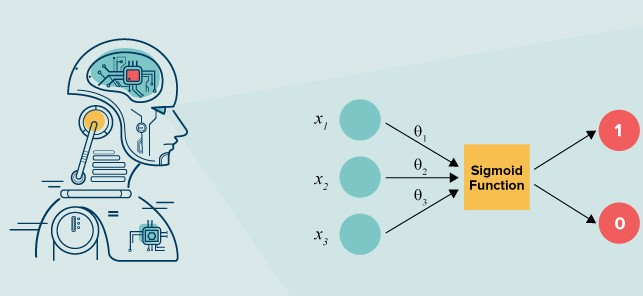
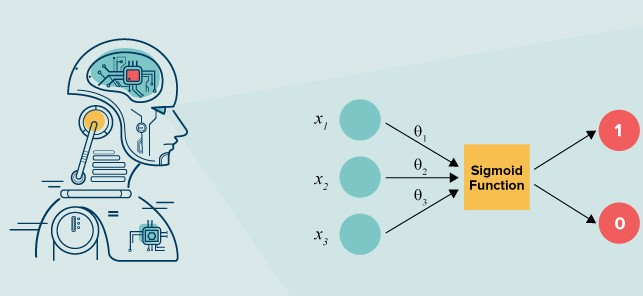
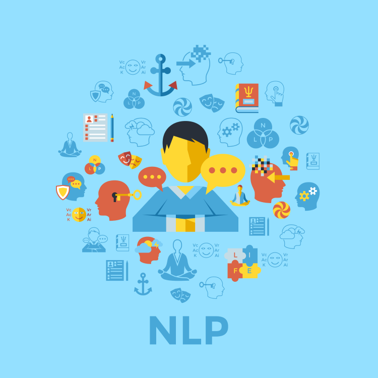
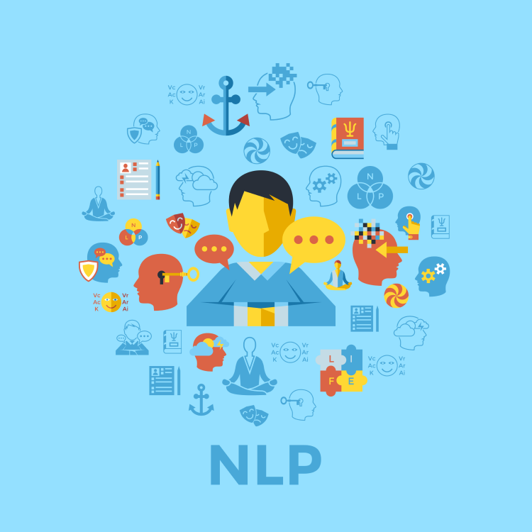

Hakkımda
İsmim Buse Yaren Tekin. Karabük Üniversitesi Bilgisayar Mühendisliği Ana Bilim Dalında Yüksek Lisans yapmaktayım. Yazılım alanında bugüne kadar ASP.NET Mvc Core, PHP Symfony, Android, Python ve Ionic platformlarında çeşitli kodlamalar geliştirdim.
Lisans tezim olan FaCiPa'da görüntü işleme teknikleri üzerinde yoğunlaşarak gerçekleştirdiğim mobil bir uygulama geliştirdim.
Her zaman yazılım alanı ilgimi çekmiştir. Sizler de bu alanda kendinizi geliştirmek istiyorsanız aşağıdaki yazılarımı inceleyebilirsiniz 🤗
2017 ve 2018 yıllarında yaptığım iki adet stajımı Dokuz Eylül Teknopark ve Akdeniz Kimya'da gerçeşleştirmiş olup kendimi Web dünyasının kollarına atmış bulunmaktayım 👩💻
EĞİTİM GEÇMİŞİ
SON BLOG YAZILARI

Aralık 2019
KERAS İLE SINIFLANDIRMA : Cats & Dogs
Herkese yeniden merhaba, bugün yazdığım yazıda sizlere bir Tensorflow üzerinde çalışabilmekte olan Keras kütüphanesi ağırlıklı olmak üzere diğer yardımcı kütüphanelerin de kullanımı ile basit bir uygulama hakkında yorumlama yapacağım. IDE olarak localhostta çalışan Jupyter IDE’sini kullanacağım. Sizlere de ısrarla kullanmanızı tavsiye ederim. Dilerseniz öncelikle ufak bir bilgi vererek başlayalım 👩🏻💻
- Açık Kaynaklı Sinir Ağı Kütüphanesi
- Veri Bilimi
- Derin Öğrenme
- Yapay Zeka
Kasım 2019
LOJİSTİK REGRESYON İLE DUYGU ANALİZİ
Duyarlılık Analizi, belirli bir şeye göre birinin hissiyatını yargılamak veya duygularını anlamlandırmak için kullanılan bir yöntemdir. Temel olarak bir metin işleme (text processing) işlemi olup verilen metinin duygusal olarak ifade etmek istediği sınıfı belirlemeyi amaçlar 🤗
- Lojistik Regresyon
- Gradyan Düşüm Algoritması
- Doğal Dil İşleme
- Duygu Analizi
 
 

Kasım 2019
NLP- Natural Language Processing 👩🏻💻
Nedir bu Doğal Dil İşleme
NLP, makinelerin insan dilini anlayarak ve türeterek anlamlar çıkarmasıdır. Makineler, tercüme sırasında spesifik olarak nasıl çeviri yapılacağını bilmediği için optimizasyon problemlerinde sık karşılaşılan NP-Hard problemleri olarak bilinir. Tıpkı birçok çeviri programlarının yaptığı iş gibi kelimeyi anlayarak özne, sıfat, yüklem gibi ögeleri dil bilgisi açısından analiz ederek bir bakıma tahmin yürütmektedir 🕵🏻♀️
- NLP Katmanları
- Word & Sentence Tokenize
- NLTK Kütüphanesi
- Güçlü Statik Tipleme
Web Platformu
ASP.NET & PHP WEB UYGULAMALARI
MVC, Razor Sayfaları
Mobil Platformu
ANDROID & IONIC MOBİL UYGULAMALARI
Android Native, Ionic Hybrid Uygulamalar
Veri Bilimi
Makine Öğrenimi | Deep Learning, Computer Vision, Görüntü İşleme | Morfolojik İşlemler